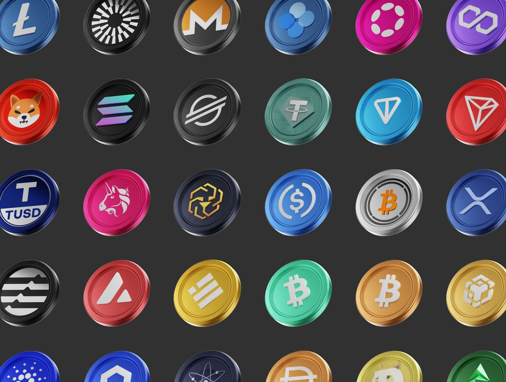

Coins are the native digital currencies of their own blockchains and serve as the primary means of transferring value within those networks. Examples include Bitcoin on the Bitcoin blockchain and Ether on Ethereum. They are used to pay transaction fees, reward network participants like miners or validators, and often act as a store of value or medium of exchange. Unlike tokens, which are built on existing blockchains, coins operate on independent infrastructures that rely on their underlying consensus mechanisms for security and functionality

Tokens are digital assets built on existing blockchains, created through smart contracts rather than operating on their own independent networks. They can represent a wide range of values or utilities, such as access to a platform’s services, voting rights in governance systems, or ownership of real-world assets like real estate or art. For example, ERC-20 tokens on Ethereum or BEP-20 tokens on BNB Chain follow specific technical standards that allow seamless compatibility across wallets and decentralized applications. Unlike native coins, tokens rely on the underlying blockchain for security and functionality, making them versatile tools for powering decentralized finance (DeFi), gaming ecosystems, and other Web3 applications.
